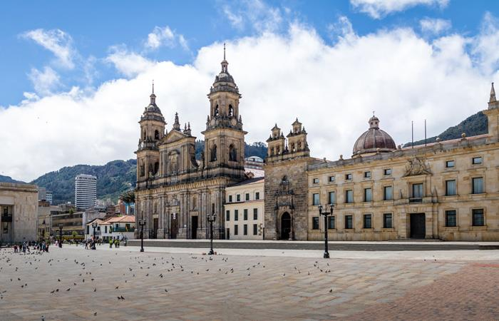

BOGOTÁ
Bogotá es la extensa capital en altura de Colombia. La Candelaria, su centro con adoquines, cuenta con sitios coloniales como el Teatro Colón neoclásico y la Iglesia de San Francisco del siglo XVII. También alberga museos populares, incluido el Museo Botero, que exhibe arte de Fernando Botero, y el Museo del Oro, con piezas de oro precolombinas.

Andrea: El barrio de la Zona Rosa es conocido por el comercio de alta gama y la vida nocturna moderna. Los barrios Parque de la 93 y La Zona G están repletos de discotecas, además de restaurantes gourmet y hoteles de lujo. Otros barrios notables son La Macarena, con muchas galerías de arte, y Usaquén, con cafés modernos y tiendas ubicadas dentro de reliquias coloniales. El Parque Simón Bolívar es uno de las numerosas áreas verdes de Bogotá y cuenta con lagos y senderos para recorrer a pie. A través del funicular se puede llegar al Cerro de Monserrate, de aproximadamente 3,200 m de altura, que tiene vistas panorámicas. En su cima está el Santuario de Monserrate, una iglesia famosa por su santuario del siglo XVII.
El Museo del Oro del Banco de la República de Colombia es una institución pública la cual su fin es la adquisición, conservación y exposición de piezas de orfebrería y alfarería de culturas indígenas del periodo precolombino de la actual Colombia, cuenta con más de 30.000 piezas hechas en oro, 20.000 de objetos líticos, cerámicos, piedras y textiles pertenecientes a las culturas Quimbaya, Calima, Tayrona, Zenú, Muisca, Tolima, Tumaco entre otros.
El cerro de Monserrate es el más conocido de los cerros Orientales de Bogotá. Junto a Guadalupe es uno de los cerros titulares de la ciudad. Monserrate tiene una altitud de 3152 m y se ubica sobre la cordillera oriental.
La Plaza de Bolívares un centro urbano espacioso rodeado por una catedral y edificios importantes con una arquitectura destacada.

El Museo Botero está situado en La Candelaria, centro histórico y cultural de Bogotá. Alberga una numerosa colección de obras donadas a Colombia por el artista Fernando Botero con la intención de difundir las artes y la cultura en su país natal.
El Museo Nacional de Colombia es el museo más antiguo de Colombia. Su acervo se divide en cuatro colecciones: arte, historia, arqueología y etnografía.